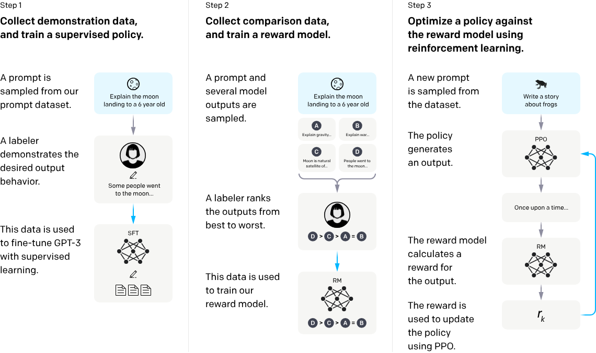
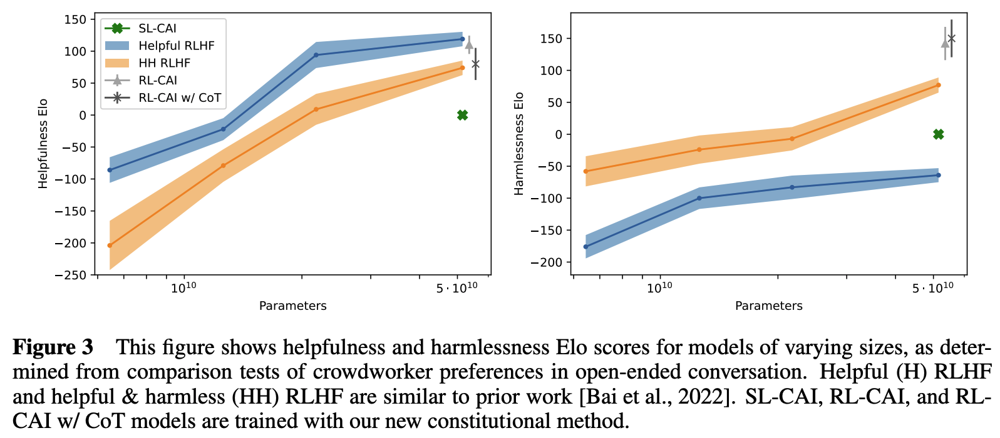
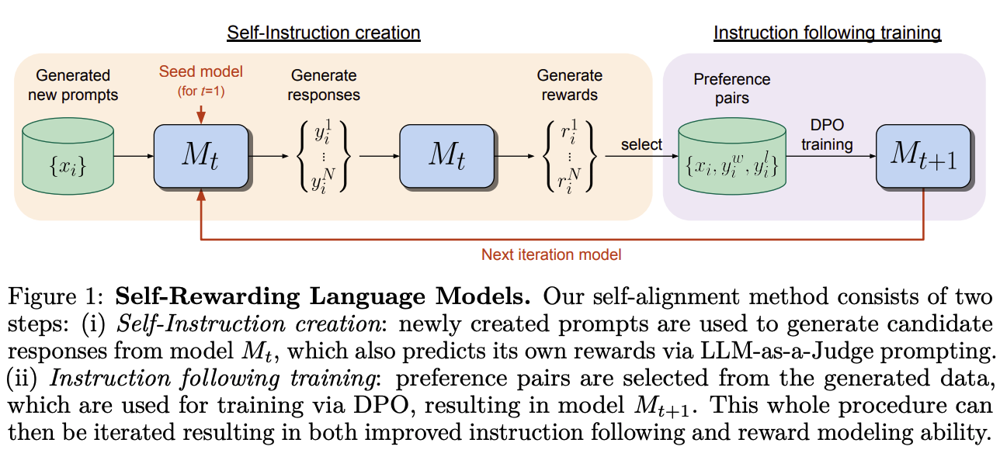

训练¶
预训练¶
实现¶
这里以开源项目 OLMo 为例，介绍其预训练流程以及主要参数和指标。
参数：
seed：随机种子，用于所有随机数模块（除打乱数据集）precision：训练/评估的计算精度，取fp32、amp_fp16或amp_bf16eval_interval：评估间隔步数save_interval：保存间隔步数save_folder：保存目录，在这里保存训练配置、模型检查点- 训练相关：
max_duration：训练总 epoch 数、步数或 token 数global_train_batch_size：等效全局 batch sizedevice_train_batch_size：等效设备 batch size，等于global_train_batch_size // world_sizedevice_train_microbatch_size：在一次前向反向计算中实际传给模型的 batch size，应根据可用显存将其设置得尽可能大device_train_grad_accum：梯度累积次数，等于device_train_batch_size // device_train_microbatch_sizemax_grad_norm：最大梯度（l2）范数。范数大于设定值的梯度会被裁剪
model（模型相关）：n_layers：transformer 层数d_model：隐状态维数mlp_hidden_size：MLP 的隐状态维数n_heads：自注意力头数n_kv_heads：k、v 头数，若设为n_heads，则为 MHA；若设为 1，则为 MQA；若设为n_heads的其他因数，则为 GQAinclude_bias：所有线性层是否引入偏置layer_norm_with_affine：层归一化是否引入权重和偏置参数rope：是否应用 RoPErope_full_precision：是否在全精度下应用 RoPEattention_dropout：对于缩放点积注意力的丢弃概率residual_dropout：残差连接时对于 \(f(x)\) 的丢弃概率vocab_size：词汇表规模embedding_size：嵌入表规模，设为大于vocab_size的 128 的倍数可以显著提升吞吐量（多余的 token 槽位被设为全 0 向量）embedding_dropout：对于输入嵌入的丢弃概率max_sequence_length：模型支持的最大输入长度activation_type：激活函数类型weight_tying：是否关联输入嵌入权重与输出线性层权重eos_token_id：EOS token 的 IDpad_token_id：填充 token 的 IDflash_attention：是否使用FlashAttention加速注意力计算init_fn：参数初始化策略，取normal、mitchell、kaiming_normal、fan_in或full_megatron
optimizer（优化器相关）：name：优化器类型learning_rate：学习率weight_decay：权重衰减betas：beta 值decay_norm_and_bias：衰减所有偏置和层归一化权重decay_embedding：衰减嵌入层权重
scheduler（规划器相关）：name：规划器类型t_warmup：热身步数
evaluators（评估相关）：label：评估标签（名称）type：评估类型，取lm或downstreamdata：评估数据，详见data
data（数据相关）：paths：数据文件路径列表pad_direction：填充方向seed：随机种子，用于打乱数据集[num_workers|pin_memory|drop_last|timeout|persistant_workers|prefetch_factor]：请参阅torch.utils.data.DataLoader
指标：
train/Perplexity：困惑度。对交叉熵求exp()即为困惑度train/CrossEntropyLoss：交叉熵optim/total_grad_norm：若将所有参数的梯度拼接为一个向量，该向量的范数optim/clipping_rate：throughput/device/tokens_per_second：单个设备每秒处理的 token 数量throughput/device/batches_per_second：单个设备每秒处理的 batch 数量
流程：
- 使用 torchrun 启动并行训练
- 运行命令
torchrun --nproc_per_node=8 scripts/train.py configs/official/OLMo-1B.yaml
- 运行命令
- [scripts/train.py#L251] 初始化进程组
- 使用 NCCL 作为分布式后端
- 默认根据环境变量
MASTER_PORT、MASTER_ADDR、WORLD_SIZE、RANK（由 torchrun 设置）进行初始化
- [scripts/train.py#L106] 设置随机种子
- [olmo/torch_util.py#L19-L24] 为所有随机数模块设置随机种子
- [scripts/train.py#L109] 构建 data loader
- 数据集文件为多个
.npy文件。.npy是 NumPy 的一种二进制文件格式，用于存储 NumPy 数组数据，包括数组元素、维度和数据类型信息。 - [olmo/data/memmap_dataset.py#L18]
MemMapDataset继承了抽象类torch.utils.data.Dataset，其映射一个索引到一个字典{'input_ids': input_ids, ...}，其中input_ids是读取自一个块的 NumPy 数组转换成的 PyTorch 张量。一个块是max_sequence_length * dtype_size个字节，作为一个训练样本。每个数据集文件被顺序划分为若干个块，末尾不足一个块的部分被丢弃。[olmo/data/init.py#L87] 构建一个这样的数据集。 - [olmo/data/collator.py#L15]
DataCollator将训练样本（{'input_ids': input_ids, ...}）列表打包为批次，其先将每个训练样本的input_ids（或其他张量）填充到所有训练样本的最大长度，再堆叠它们，最终仍然返回一个字典{'input_ids': batched_input_ids, ...}。[olmo/data/init.py#L84] 构建一个这样的 data collator。 - [olmo/data/iterable_dataset.py#L19]
IterableDataset继承了抽象类torch.utils.data.IterableDataset，其将MemMapDataset实例进一步包装为可迭代的数据集，并实现以下功能：- 根据随机种子和当前 epoch 确定性地打乱全局索引（即
MemMapDataset实例的所有样本的索引），并保存为.npy文件以便于当前 epoch 重启训练。 - 根据当前 rank 取全局索引的子集，所有 rank 的子集是对全局索引的一个划分（partition）。相当于
torch.utils.data.distributed.DistributedSampler的作用。 - 根据当前 data loader worker ID 取 rank 索引的子集，所有 data loader worker 的子集是对 rank 索引的一个划分。
- [olmo/data/init.py#L99] 进行包装。
- 根据随机种子和当前 epoch 确定性地打乱全局索引（即
- 数据集文件为多个
- [scripts/train.py#L112] 构建 evaluator
- [olmo/eval/evaluator.py#L15]
Evaluator维护和计算指标，有两种类型：lm 和 downstream - [olmo/eval/init.py#L79] 对于 lm 类型，[olmo/data/init.py#L47] 构建 data loader 的步骤类似于 4.，但没有经过
IterableDataset包装而是直接使用torch.utils.data.distributed.DistributedSampler，因而更加简单；[olmo/eval/evaluator.py#L75] 指标为困惑度和交叉熵。 - [olmo/eval/init.py#L76] 对于 downstream 类型，[olmo/data/init.py#L24] 数据集和指标都是针对具体任务单独实现。例如对于基准测试 PIQA（常识问答，多项选择），数据集的实现使用
datasets库加载原数据集，对每个样本的问题和答案选项进行分词，连同 target 作为新的样本；指标选用 acc。
- [olmo/eval/evaluator.py#L15]
- [scripts/train.py#L117] 构建模型
- 包含以下层：
- [olmo/model.py#L960]
wte：嵌入层 - [olmo/model.py#L963]
emb_drop：嵌入丢弃层 - [olmo/model.py#L968] transformer 块
- [olmo/model.py#L460]
rotary_emb：旋转嵌入层，请参阅位置嵌入。[olmo/model.py#L253]RotaryEmbedding手动实现了 RoPE - [olmo/model.py#L642]
attn_norm：self-attention 之前的层归一化层 - [olmo/model.py#L652]
att_proj：计算 q、k、v 的线性层 - [olmo/model.py#L445]
att_out：对计算得到的注意力进行线性变换的线性层 - [olmo/model.py#L643]
ff_norm：FFN 之前的层归一化层 - [olmo/model.py#L656]
ff_proj：两层 FFN 的第一层 - [olmo/model.py#L441]
act：激活函数层 - [olmo/model.py#L450]
ff_out：两层 FFN 的第二层 - [olmo/model.py#L422]
dropout：残差连接时的丢弃层
- [olmo/model.py#L460]
- [olmo/model.py#L964]
ln_f：计算 logits 之前的层归一化层 - [olmo/model.py#L985]
ff_out（可选，可以共用wte）：logits 输出层
- [olmo/model.py#L960]
- 前向计算步骤如下：
# 现有 input_ids, attention_mask, attention_bias # 嵌入 # input_ids: (batch_size, seq_len) # x: (batch_size, seq_len, d_model) batch_size, seq_len = input_ids.size() x = self.emb_drop(self.wte(input_ids)) # 构建 attention mask # 这里的 attention_mask 对应 transformers 库的 attention mask，参阅 https://huggingface.co/docs/transformers/en/glossary#attention-mask # attention_bias 对应 `F.scaled_dot_product_attention` 的 attn_mask # attention_mask: (batch_size, seq_len) -> (batch_size, 1, 1, seq_len) # attention_bias: (1, 1, seq_len, seq_len) attention_mask = attention_mask.to(dtype=torch.float).view(batch_size, -1)[:, None, None, :] attention_mask = (1.0 - attention_mask) * torch.finfo(attention_mask.dtype).min # e.g. [0, 1, 1, 1] -> [dtype.min, 0, 0, 0] attention_bias = attention_bias + attention_mask # e.g. [[0, dtype.min, dtype.min, dtype.min] [[dtype.min, dtype.min, dtype.min, dtype.min] # [0, 0, dtype.min, dtype.min] -> [dtype.min, 0, dtype.min, dtype.min] # [0, 0, 0, dtype.min] [dtype.min, 0, 0, dtype.min] # [0, 0, 0, 0]] [dtype.min, 0, 0, 0]] # `F.scaled_dot_product_attention()` 不能正确地处理 -inf，这里用 dtype.min 替代 # for transformer blocks # 计算 q, k, v # x: (batch_size, seq_len, d_model) # qkv: (batch_size, seq_len, d_model + 2 * n_kv_heads * head_dim) qkv = self.att_proj(self.attn_norm(x)) # self.attn_norm(x) 类似于 F.layer_norm(x, [d_model]) # 拆分 q, k, v # q: (batch_size, seq_len, d_model), (B, T, C) # k, v: (batch_size, seq_len, n_kv_heads * head_dim), (B, T, n_kv_h * hd) q, k, v = qkv.split(self.fused_dims, dim=-1) # 拆分头数的维度，并移动到轴 1 # q: (B, T, C) -> (B, nh, T, hd) # k, v: (B, T, n_kv_h * hd) -> (B, n_kv_h, T, hd) q = q.view(B, T, n_heads, C // n_heads).transpose(1, 2) k = k.view(B, T, n_kv_heads, C // n_heads).transpose(1, 2) v = v.view(B, T, n_kv_heads, C // n_heads).transpose(1, 2) # 对 q, k 应用 RoPE，详见 [olmo/model.py#L300] q, k = self.rotary_emb(q, k) # 计算缩放点积注意力 - 实现 1：flash attention 实现，无 attention mask att = flash_attn_func( q.transpose(1, 2), k.transpose(1, 2), v.transpose(1, 2), dropout_p=attention_dropout, causal=True ).transpose(1, 2) # 计算缩放点积注意力 - 实现 2：torch 实现，有 attention mask num_kv_heads = k.size(1) num_q_heads = q.size(1) if num_q_heads != num_kv_heads: k = k.repeat_interleave(num_q_heads // num_kv_heads, dim=1, output_size=num_q_heads) v = v.repeat_interleave(num_q_heads // num_kv_heads, dim=1, output_size=num_q_heads) F.scaled_dot_product_attention(q, k, v, attn_mask=attention_bias, dropout_p=attention_dropout, is_causal=False) # 计算缩放点积注意力的具体实现可以参阅 nanogpt: https://github.com/karpathy/nanoGPT/blob/master/model.py#L67-L71 # att = (q @ k.transpose(-2, -1)) * (1.0 / math.sqrt(k.size(-1))) # (B, nh, T, hd) @ (B, nh, hd, T) -> (B, nh, T, T) # tril = torch.tril(torch.ones(max_sequence_length, max_sequence_length)) # att = att.masked_fill(tril[:,:,:T,:T] == 0, float('-inf')) # att = F.softmax(att, dim=-1) # att = att @ v # (B, nh, T, T) @ (B, nh, T, hd) -> (B, nh, T, hd) # 重新拼接所有头的注意力 att = att.transpose(1, 2).contiguous().view(B, T, C) # 线性变换后输出 att = self.attn_out(att) # 残差连接，可选地丢弃注意力 x = x + self.dropout(att) # 计算 FFN # x: (batch_size, seq_len, d_model) x0 = x x = self.ff_out(self.act(self.ff_proj(self.ff_norm(x)))) # self.ff_norm(x) 类似于 F.layer_norm(x, [d_model]) # self.ff_proj() 是两层 FFN 的第一层 # self.act() 是两层 FFN 的中间的激活函数。若为 swiglu 类型，则 W_1 被视为 [W V] # self.ff_out() 是两层 FFN 的第二层 # 残差连接 x = x0 + self.dropout(x) # end for transformer blocks # 计算 logits # x: (batch_size, seq_len, d_model) # logits: (batch_size, seq_len, embedding_size) x = self.ln_f(x) logits = F.linear(x, self.transformer.wte.weight, None) # 关联权重 logits = self.transformer.ff_out(x) # 不关联权重 # 计算损失 # logits_for_loss: (batch_size, seq_len - 1, embedding_size) -> (batch_size * (seq_len - 1), embedding_size) # labels: (batch_size, seq_len - 1) logits_for_loss = logits[..., :-1, :].contiguous() # 去掉序列末位的 logits，因为没有相应的 label logits_for_loss = logits_for_loss.view(-1, logits_for_loss.size(-1)) labels = input_ids.clone()[..., 1:].contiguous() # 去掉序列首位的 token，因为没有相应的 logits ce_loss = F.cross_entropy(logits_for_loss, labels, ignore_index=-100) - 与 nanogpt（可视化）的区别在于：
- OLMo 采用 RoPE，而 nanogpt 采用绝对位置编码
- OLMo 考虑到因为 left padding attention mask 不为三角矩阵的情况（虽然在实际训练中这种情况并没有出现）
- nanogpt 没有丢弃层
- 包含以下层：
- [scripts/train.py#L136] 使用 FSDP（ZeRO-3）包装模型（这里不再展开）
- [scripts/train.py#L155-156] 构建优化器和 lr 规划器
- [olmo/optim.py#L622] 所有线性层的
weight进行权重衰减，其余参数不进行权重衰减 - lr 在热身阶段逐渐上升，在热身阶段之后逐渐下降直至收敛（热身以削弱首因效应，参阅 What does learning rate warm-up mean?）
- 最大梯度范数（max grad norm）在热身阶段取较大值，在热身阶段之后取较小值（热身阶段容许训练不稳定）
- [olmo/optim.py#L622] 所有线性层的
- [scripts/train.py#L168,238] 构建 Trainer，开始训练
- 记录各指标
- 定期评估（TODO）、保存检查点
- batch 分成 micro-batch，进行梯度累积
- 裁剪梯度
- 使用 PyTorch Profiler 进行 profiling
一些优化措施：
- 保存当前 epoch 的数据索引文件
trick¶
微调¶
对于微调的数据，质量比数量更重要，换言之，在精不在多。
SFT（有监督微调）¶
数据来自：选取具有代表性的问题，人类编写答案。
实现¶
RLHF¶
先训练反映人类偏好的奖励模型，再将其作为环境使用 PPO 算法训练 LLM。

数据来自：选取具有代表性的问题，LLM 生成两个（或多个）答案，人类对这些答案进行排序。
比较 SFT 和 RLHF：
- 从人类产生训练数据的角度看，人类写出高质量的答案并不容易（甚至写不出来），成本也高；但人类比较答案的相对好坏则容易得多，成本也低得多。
- 从模型学习的角度来看，在 SFT 中，模型学习的是接下一个 token，对于答案整体没有考量；在 RLHF 中，模型学习的是对于答案整体的选择（强化学习的思路）。
RLHF 的问题和局限性（2307.15217）：
流程¶
TODO
实现¶
TODO
新的 RL 算法¶
- DPO（）[2305.18290]
- SPIN（）[2401.01335]
流程¶
实现¶
RLAIF¶
注意
在这一部分的表述中，“指令”指 SFT 样本或 RL 样本中的 prompt 部分，“prompt”专指为了让 LLM 生成数据而构建的 prompt。
- self-instruct（LLM SFT 自己）[2212.10560]
- SFT（注：原论文为“指令微调”）需要的人类编写的数据受限于数量（成本高）、多样性和创造性，self-instruct 方法使用 LLM 生成指令和回答以 SFT 这个 LLM 自身。
- 生成指令和回答的 prompt 均采用 few-shot，需要准备一些任务示例。
- self-instruct 方法应用于 vanilla GPT-3 ，得到的模型表现接近 text-davinci-001。
- Alpaca（使用 GPT-3.5 生成的数据 SFT LLaMA）[tatsu-lab/stanford_alpaca]
- Vicuna（使用 ChatGPT 生成的数据 SFT LLaMA，对话来自用户分享）[lm-sys/FastChat]
- LLaMA-GPT4（使用 GPT-4 生成的数据 SFT LLaMA，指令来自 Alpaca；另外使用 GPT-4 生成的数据训练反映 GPT-4 偏好的奖励模型）[2304.03277]
-
Constitutional AI（CAI，宪法 AI）[2212.08073]
- 理念：
- 利用 AI 来更有效地监督 AI，人类只需要制定一些原则（宏大愿景）
- RLHF 需要大量人类标注的数据，这些数据的成本高，并且人类无法有效地理解或总结这些数据。将 RL 目标编码为自然语言表述的原则的列表，并让 LLM 根据原则解释为何拒绝有害请求，会是更好的方案。
- 在无害程度相当的条件下，偏好更加积极、透明、解释性的回答，而不是回避性质的回答，例如”我不能回答这个问题“。因为出于安全方面的考虑，让 LLM 的思维过程保持透明十分重要；出于实践方面的考虑，正面回应的回答的有用性也更好。
- 方法：
- 向一个 helpful RLHF 模型（经过 RLHF 训练，且训练数据仅包括有用性比较）（称为模型 A）展示一个被设计引导有害行为的指令，采样一个回答。然后要求模型 A 批评并修改该回答，重复数次，其中每次要求批评和要求修改的 prompt 是一对，从预先编写好的若干对（称为原则）中随机抽取，这些原则可以分别强调不同面向的有害性，它们和 4. 中的原则共同构成了宪法。每次修改后的回答都和当前指令拼接为一个 SFT 样本，准备许多这样的指令以收集数据。
- 准备一些 helpfulness 指令（用于评估回答有用性的指令），采样模型 A 的回答，与当前指令拼接为一个 SFT 样本。
- 使用 1. 和 2. 收集的数据 SFT 一个预训练模型（称为模型 B），得到的模型称为 SL-CAI。
- 向 SL-CAI 展示一个指令，采样一对回答。然后将该指令和回答对展示给一个 feedback 模型（称为模型 C），并附加一个原则，要求模型 C 选择更好的回答。同样地，原则也是从预先编写好的若干个中随机抽取。计算两个回答的概率，作为 soft label（相比 hard label，训练出来的模型产生的回答更加健壮）和当前指令以及回答对拼接为一个 RL 样本，准备许多这样的指令以收集数据。要求选择回答的 prompt 可以选用 CoT。
- 准备一些人类标注的有用性比较样本。
- 使用 5. 和 6. 收集的数据 RL 训练 SL-CAI，得到的模型称为 RL-CAI。
-
结果：

以及，RL-CAI 几乎不会回避问题，而是给出透明并且无害的回答。
- 理念：
-
RLAIF（完善 RLAIF 方法）[2309.00267]
- LLM 标注偏好：向一个 labeler 模型（称为模型 A）展示一个指令和回答对，要求模型 A 选择更好的回答，计算两个回答的概率，作为 soft label 和当前指令以及回答对拼接为一个 RL 样本。
- 指令和回答对来自已有的数据集。
- 要求选择回答的 prompt 可以选用 few-shot 和 CoT。
- 交换两个回答的位置计算两次取平均，以消除位置偏差。
- 模型 A 可以是一个预训练模型或 SFT 过的模型。
- RLAIF：
- distilled RLAIF：使用收集的数据训练一个奖励模型（称为模型 B）。具体地，将模型 B 生成的分数作 softmax，计算得到的概率分布与 soft label 的交叉熵。模型 B 学习的是模型 A 的偏好，这可以视作是一种模型蒸馏。
- direct RLAIF：向一个 LLM（称为模型 C）展示一个指令和一个回答，以及具体的评分标准，要求模型 C 进行评分，计算 10 个分数（从 1 到 10）的概率，计算加权分数，再归一化到 [0,1] 区间以作为奖励。
- 要求进行评分的 prompt 可以选用 few-shot 和 CoT。
- 模型 C 可以是一个预训练模型或 SFT 过的模型。
- 结果：
- RLAIF 实现与 RLHF 相当或更好的模型表现。
- 即使 labeler 模型的大小与 policy（在 RLAIF 之前是一个 SFT 过的模型）相同，RLAIF 依然可以提升 policy 的表现。
- direct RLAIF 实现比 distilled RLAIF 更好的模型表现。
- 对于不同的任务，prompt 的最优配置也不同。
- LLM 标注偏好：向一个 labeler 模型（称为模型 A）展示一个指令和回答对，要求模型 A 选择更好的回答，计算两个回答的概率，作为 soft label 和当前指令以及回答对拼接为一个 RL 样本。
-
self-rewarding（LLM 奖励自己）[2401.10020]
-
方法：
- 准备一些人类标注的指令遵循样本（称为 IFT 数据）和 LLM-as-a-Judge 指令遵循样本（prompt 包括指令、回答、评分标准，采用 CoT，要求 LLM 进行评分，称为 EFT 数据），SFT 一个预训练模型（称为 M0），得到的模型称为 M1。
- 使用模型 M1 生成 RL 样本，重复下列步骤以收集数据：
- 生成一个新的指令，prompt 采用 few-shot（来自 IFT）。
- 采样 N 个候选回答。
- 使用 LLM-as-a-Judge prompt 评估候选回答，从 0 到 5 打分，取最高分和最低分回答组成回答对。若最高分和最低分相同，则跳过当前循环。回答对与指令拼接为一个 RL 样本。
- 使用 2. 收集的数据 RL（DPO）训练 M1，得到的模型称为 M2。
- 重复 2. 和 3.，训练 M2，得到的模型称为 M3。

-
结果：
- SFT 阶段 EFT 数据的加入提升 LLM 作为奖励模型的评估能力，而几乎不影响 LLM 的指令遵循能力。
- 对于指令遵循能力，M1 < M2 < M3。M3 在 AlpacaEval 2.0（评估指令遵循能力）排行榜上超过了 Claude 2、Gemini Pro 和 GPT4 0613。
- 对于作为奖励模型的评估能力，M1 < M2 < M3。
- 对于在下游任务上的表现，对于大部分 NLP benchmark，M1 > M2 > M3，2203.02155 将这种现象称为对齐税（alignment tax）。
-
PEFT¶
PEFT（Parameter-Efficient Fine-Tuning，参数高效微调）方法仅微调少量模型参数，显著降低计算和存储成本，却能够实现与全参数微调相当的模型表现。
PEFT 方法可以粗略分为以下三大类：
- additive：原始参数保持冻结，增加新的模块/参数进行微调
- adapters（引入 adapter 模块）
- soft prompts（引入虚拟 token）
- selective：仅更新原始参数的一部分，其他参数保持冻结
- reparameterization：不直接更新原始参数（的一部分），而是用一个更小的参数矩阵来表示原始参数的变化

- Adapter tuning（训练串联的 adapter 模块）[1902.00751]

- Prefix-Tuning（训练虚拟 token 前缀）[2101.00190]
- 前缀就是若干个连续的、可训练的嵌入向量，放在输入序列之前，为接下来的生成提供某种上下文。
- 前缀长度最小可取 1；前缀越长，可训练参数越多，表达能力越强，与此同时需要的注意力计算量越大，从而降低训练和推理速度。
- 每个注意力层有自己单独的前缀。
- 每种任务可训练一套前缀。

-
LoRA（训练并联的秩分解矩阵）[2106.09685]
- 秩分解矩阵就是令权重更新矩阵 \(ΔW=BA\)，其中 \(W\in\mathbb{R}^{m×n},B\in\mathbb{R}^{m×r},A\in\mathbb{R}^{r×n},r<<\min(m,n)\)。
- 原则上，可为任何权重矩阵应用 LoRA；实践中，通常为 \(W_q\) 和 \(W_v\) 应用 LoRA。
- LoRA 对于小数据量的微调也十分有效。
- （对于预训练模型）较为简单的下游任务对应较小的最优秩 \(r\) ，这意味着相应的 \(ΔW\) 有较小的本征秩（intrinsic rank）；反之亦然。
- 秩分解矩阵潜在地放大对于特定下游任务重要的、在通用预训练模型中已学到但并未被强调的特征。

-
BitFit（仅更新偏置参数）[2106.10199]
实现¶
Adapter tuning¶
Prefix-Tuning¶
def forward(
self,
input_ids=None,
attention_mask=None,
inputs_embeds=None,
labels=None,
output_attentions=None,
output_hidden_states=None,
return_dict=None,
task_ids=None,
**kwargs,
):
peft_config = self.active_peft_config
# 非 soft prompts 类型方法
if not peft_config.is_prompt_learning:
...
# soft prompts 类型方法
batch_size = _get_batch_size(input_ids, inputs_embeds)
if attention_mask is not None:
# 拼接 prompt attention mask
prefix_attention_mask = torch.ones(batch_size, peft_config.num_virtual_tokens).to(attention_mask.device)
attention_mask = torch.cat((prefix_attention_mask, attention_mask), dim=1)
...
kwargs.update(
{
"attention_mask": attention_mask,
"labels": labels,
"output_attentions": output_attentions,
"output_hidden_states": output_hidden_states,
"return_dict": return_dict,
}
)
if peft_config.peft_type == PeftType.PREFIX_TUNING:
# 生成 past_key_values 格式的 prompt
kwargs["past_key_values"] = self.get_prompt(batch_size)
# 调用基础模型的前向计算
return self.base_model(input_ids=input_ids, inputs_embeds=inputs_embeds, **kwargs)
进一步查看如何生成 prompt：
def get_prompt(self, batch_size: int, task_ids: Optional[torch.Tensor] = None) -> torch.Tensor:
peft_config = self.active_peft_config
# 获取 prefix encoder
prompt_encoder = self.prompt_encoder[self.active_adapter]
# 获取虚拟 token 索引，e.g. [0, 1, 2, 3]
prompt_tokens = (
self.prompt_tokens[self.active_adapter]
.unsqueeze(0)
.expand(batch_size, -1)
.to(prompt_encoder.embedding.weight.device)
)
if peft_config.peft_type == PeftType.PREFIX_TUNING:
prompt_tokens = prompt_tokens[:, : peft_config.num_virtual_tokens]
if peft_config.inference_mode:
# 在推理模式下，直接重复虚拟 token 前缀
past_key_values = prompt_encoder.embedding.weight.repeat(batch_size, 1, 1)
else:
# 在训练模式下，使用 prefix encoder 生成虚拟 token 前缀
past_key_values = prompt_encoder(prompt_tokens)
if self.base_model_torch_dtype is not None:
past_key_values = past_key_values.to(self.base_model_torch_dtype)
past_key_values = past_key_values.view(
batch_size,
peft_config.num_virtual_tokens,
peft_config.num_layers * 2,
peft_config.num_attention_heads,
peft_config.token_dim // peft_config.num_attention_heads,
)
if peft_config.num_transformer_submodules == 2:
past_key_values = torch.cat([past_key_values, past_key_values], dim=2)
past_key_values = past_key_values.permute([2, 0, 3, 1, 4]).split(
peft_config.num_transformer_submodules * 2
)
if TRANSFORMERS_MODELS_TO_PREFIX_TUNING_POSTPROCESS_MAPPING.get(self.config.model_type, None) is not None:
post_process_fn = TRANSFORMERS_MODELS_TO_PREFIX_TUNING_POSTPROCESS_MAPPING[self.config.model_type]
past_key_values = post_process_fn(past_key_values)
return past_key_values
else:
...
进一步查看 prefix encoder 的实现：
class PrefixEncoder(torch.nn.Module):
def __init__(self, config):
super().__init__()
# 是否启用投影
self.prefix_projection = config.prefix_projection
# 虚拟 token 嵌入维数
token_dim = config.token_dim
# 层数
num_layers = config.num_layers
# 编码器隐藏维数
encoder_hidden_size = config.encoder_hidden_size
# 虚拟 token 数量
num_virtual_tokens = config.num_virtual_tokens
if self.prefix_projection and not config.inference_mode:
# 嵌入虚拟 token
self.embedding = torch.nn.Embedding(num_virtual_tokens, token_dim)
# 通过两层 MLP 变换
self.transform = torch.nn.Sequential(
torch.nn.Linear(token_dim, encoder_hidden_size),
torch.nn.Tanh(),
torch.nn.Linear(encoder_hidden_size, num_layers * 2 * token_dim),
)
else:
# 直接嵌入虚拟 token 到所有层
self.embedding = torch.nn.Embedding(num_virtual_tokens, num_layers * 2 * token_dim)
def forward(self, prefix: torch.Tensor):
if self.prefix_projection:
# 先嵌入后变换
prefix_tokens = self.embedding(prefix)
past_key_values = self.transform(prefix_tokens)
else:
# 直接嵌入
past_key_values = self.embedding(prefix)
return past_key_values
P-tuning
LoRA
以 peft 库为例，其 LoRA 微调的实现可以参阅代码实现。
BitFit
# 加载预训练模型
model = AutoModelForCausalLM.from_pretrained(model_path, low_cpu_mem_usage=True)
# 计算模型的总参数量
print(sum(param.numel() for param in model.parameters()))
# BitFit微调 - 只训练bias参数
num_param = 0
for name, param in model.named_parameters():
if "bias" not in name:
param.requires_grad = False # 非bias参数冻结
else:
num_param += param.numel() # 统计bias参数数量
# 打印bias参数数量
print(num_param)
# 打印bias参数占总参数的比例
print(num_param / sum(param.numel() for param in model.parameters()))
QLoRA